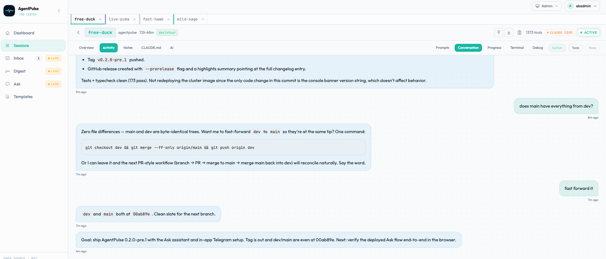

Control Claude Code from another computer or your phone
You start a long Claude Code task at your desk and walk away. Did it finish? Is it stuck on a permission prompt? Can you give it the next instruction without going back? This guide sets up remote access to your coding agents with a self-hosted AgentPulse server.
Two levels of remote access
Before setting anything up, it helps to know what "remote" can mean:
| Watch remotely | Control remotely | |
|---|---|---|
| What you can do | See status, prompts, tool calls and history for every session | Launch new sessions, send prompts, stop and retry |
| Which sessions | Any session with AgentPulse hooks installed, including ones you started in a terminal | Sessions AgentPulse launched through a supervisor (called managed sessions) |
| What you install | Hooks, plus a relay if the server is on another machine | The same, plus the supervisor on each machine that runs agents |
The split is deliberate. AgentPulse can only type into a session whose process it holds. A session you started yourself in a terminal belongs to that terminal, so it can be watched but not steered.
Step 1: run the server somewhere you can reach
The simplest option is your own machine, with the dashboard opened up to your LAN and login turned on:
docker run -d -p 0.0.0.0:3000:3000 -v agentpulse-data:/app/data \
-e HOST=0.0.0.0 \
-e AGENTPULSE_LOCAL_ADMIN_USERNAME=admin \
-e AGENTPULSE_LOCAL_ADMIN_PASSWORD='<strong-password>' \
--restart unless-stopped --name agentpulse ghcr.io/jstuart0/agentpulseNever combine a LAN-facing port with DISABLE_AUTH=true. That would give everyone on the network full control with no password.
To reach it from outside your home, put AgentPulse on a server behind HTTPS and single sign-on instead. AgentPulse works with any forwardauth identity provider: Authentik, Authelia, oauth2-proxy, Pomerium or Cloudflare Access. See self-hosting AgentPulse.
Step 2: connect each machine
On every machine that runs agents, install the relay. It sets up the hooks and forwards events to your server:
curl -sSL https://your-agentpulse-server.example.com/setup-relay.sh | bashThat's enough to watch every session from your phone. Open the dashboard in a mobile browser to see the same sessions, statuses and timelines you'd see at your desk.
Step 3: add a supervisor for control
The supervisor is a small process that runs on each machine and launches agents on AgentPulse's behalf. The one-command local install starts one for you. On other machines, create an enrollment token on the dashboard's Hosts page and use it to register that machine's supervisor.
With supervisors connected you can, from any browser:
- Launch a headless or interactive Claude Code or Codex session, from scratch or from a saved template, on a host you pick.
- Prompt a running managed session, as if you'd typed into its terminal.
- Stop or retry it.

Step 4 (optional): approvals in Telegram
AgentPulse's experimental AI Labs layer includes a Telegram channel. When a session watcher wants a human decision, it sends the request to a Telegram chat with Approve and Decline buttons. The same chat accepts plain-language requests through the Ask assistant, such as "open a Claude session for myapp". Anything that changes state still goes through an approval card. Setup steps are in the README.
Security notes
- Hooks and the dashboard use separate credentials. Hook ingestion uses scoped API keys, and the dashboard uses a login or SSO.
- API keys carry explicit scopes:
ingestto post events,observeto read,manageto launch and control. Give each machine only what it needs. - A launch carries its prompt and environment to the chosen host's supervisor. Name the host explicitly when that matters.